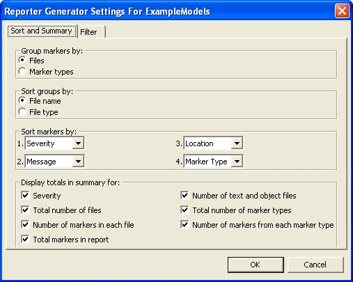
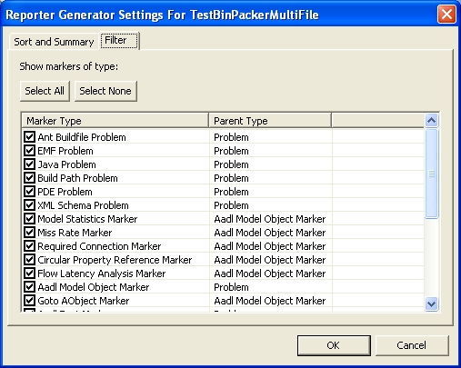

Previous
Next
Previous
Next 
| 6. Generating Reports from the “Problems” View |
OSATE can generate HTML reports detailing the markers attached to a particular project. To
generate a marker report, select an resource, i.e., a file, folder, or project, that contains at least
one error, warning, or information marker then click on the “Generate Marker Report” ( )
button on the toolbar or select “OSATE > Generate Marker Report.” A dialog box will allow
you to choose where to save the report. For files/folders in AADL Projects, you may use
either the “Navigator” or “Package Explorer” view to make the selection.
)
button on the toolbar or select “OSATE > Generate Marker Report.” A dialog box will allow
you to choose where to save the report. For files/folders in AADL Projects, you may use
either the “Navigator” or “Package Explorer” view to make the selection.
The marker reporter functionality is not specific to AADL projects and can be used for any
file/folder/project in an Eclipse workspace, including Java projects. To generate a report for a
file/folder in a Java project, however, the file/folder must be selected using the “Navigator”
view; it will not work if you select the file/folder in the “Package Explorer.”
The layout of a report can be modified. These settings are project specific. To modify the
report layout: select a resource within a project or the project itself, and then select “OSATE >
Report Generator Settings.” Figure 15 shows the dialog box that is then displayed.

Figure 15: Report Generator Settings dialog box.
The markers in the report are organized into groups. You can specify whether to group the
markers by file name or marker type. If you choose to group by files, you can then choose to
sort the order of the groups by their file names or type. You can also specify the sort order of
markers within the groups.
At the end of each report are certain totals about the report. For example, it displays the total
number of markers in the report. It also displays the total number of files, and the number of
markers per file. You can specify which totals are to be displayed in the report by modifying
the check boxes in the Reporter Generator Setting dialog box.
The Reporter Generator Settings dialog allows you to specify what type of markers are to be
included in the report. To do this, click on the “Filter” tab in the Reporter Generator Settings
dialog; see Figure 16. The filter works the same way the filter on the Eclipse “Problems” View.

Figure 16: Use the "filter" tab to control which markers are reported.